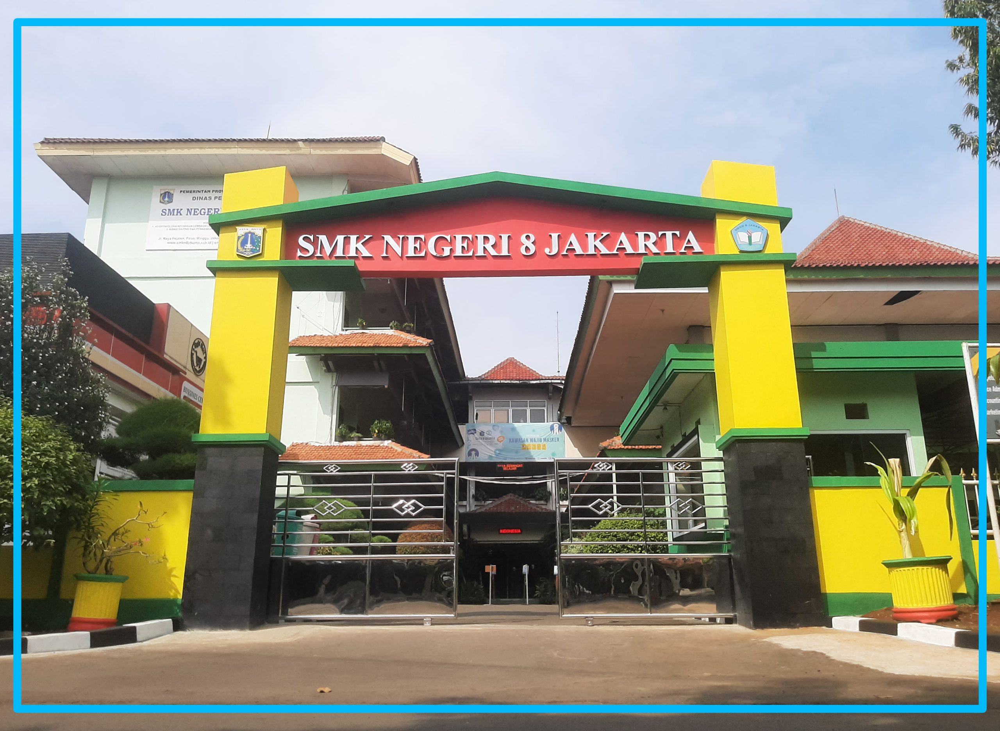
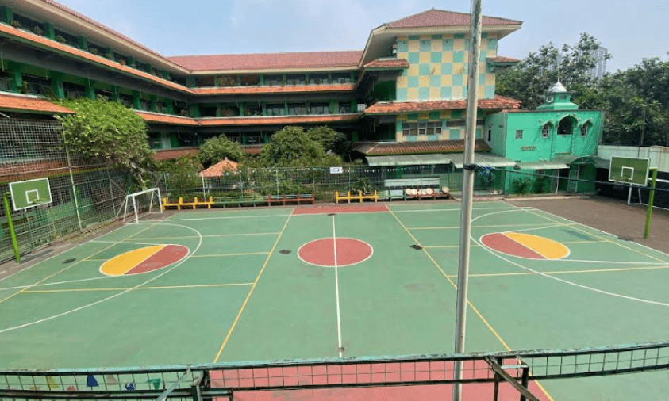

SMK Negeri 8 Jakarta merupakan salah satu sekolah menengah kejuruan unggulan di Jakarta Selatan yang berfokus pada pengembangan keterampilan vokasi, bisnis, dan teknologi. Kami berkomitmen mencetak lulusan yang siap kerja, mandiri, dan berkarakter.
Berikut adalah program keahlian yang tersedia di SMKN 8 Jakarta:
Tahapan alur pendaftaran peserta didik baru adalah sebagai berikut:

Email: info@smkn8jakarta.sch.id
Website: SMKN8Jakarta
Catatan Penulisan: Penggunaan tag HTML ditulis dengan format <nama_tag>.
Hak cipta © 2026 Muhammad Farrel Rizky - SMKN 8 Jakarta.